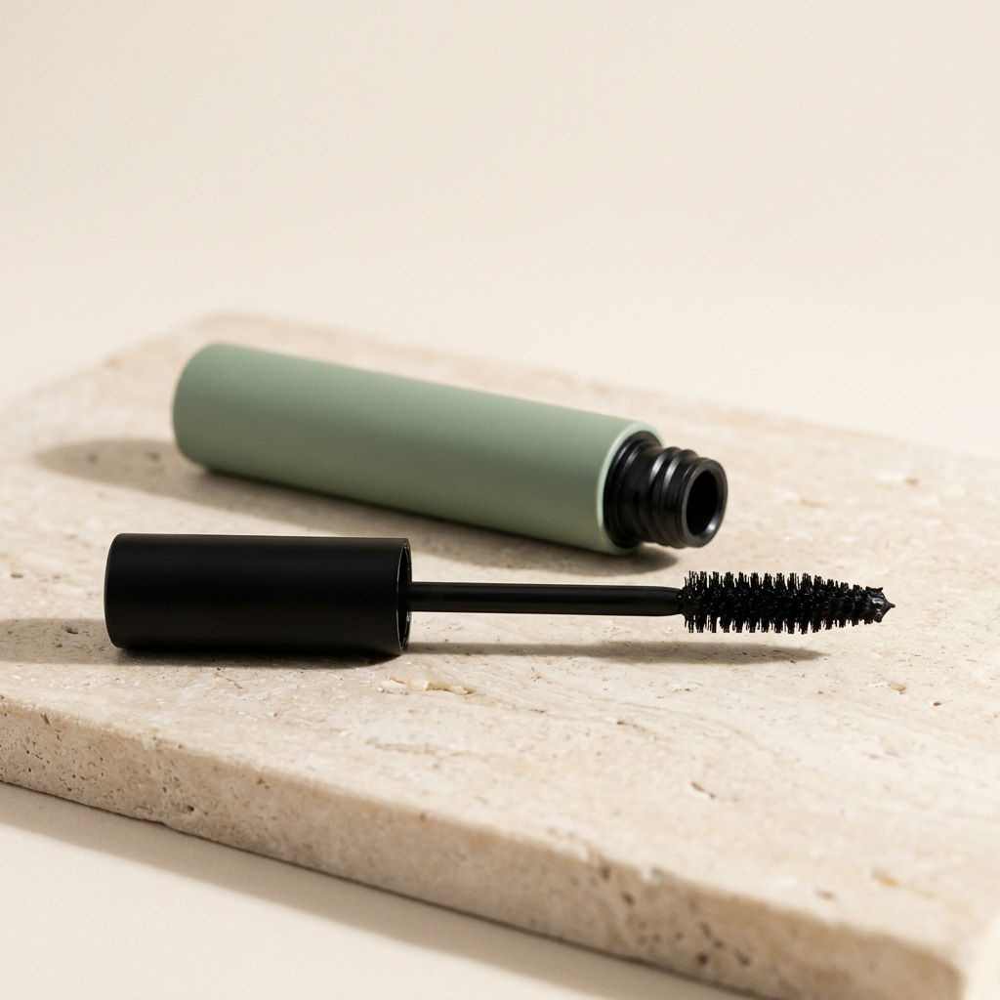

Maybelline New York Lash Sensational Sky High Maskara içerik analizi
Göz · Uzatıcı Maskara · ₺
82/100 · Sağlıklı & Temiz
Vegan DeğilHamilelik uyarısı yokParaben içermezParfüm / koku alerjeni yok1 hayvansal bileşen (Cera Alba)Cilt dostu aktifler: Demir Oksitler (Mineral Pigment) & Balmumu (Cera Alba)
Vegan mı? Vegan Değil. Hayvansal kaynaklı bileşen tespit edildi: Balmumu (Cera Alba).
Sağlıklı mı? Genel olarak güvenli, cilt bariyerini koruyan temiz bir formüle sahip.
Bambu özü ve esnek fırçasıyla yoğun uzunluk veren ikonik maskara. Balmumu (Cera Alba) içerdiği için vegan değildir; kurutucu alkol nedeniyle çok hassas gözlerde dikkat gerektirir.
Cilt tipi: En uygun cilt tipleri: Karma, Normal
Marka: Maybelline New York — Karma (Ürün Bazlı Kontrol).
Uygulamada detaylı analizi aç →Satın al
Amazon.com.tr Trendyol HepsiburadaDikkat edilmesi gerekenler
- AB'de oran sınırı olan madde: Phenoxyethanol
İçindekiler (INCI) — 8 bileşen
- Aqua — Saf Su (Güvenli)
- Iron Oxides — Demir Oksitler (Mineral Pigment) (Güvenli)
- Cera Alba — Balmumu (Cera Alba) (Güvenli)
- Copernicia Cerifera Cera — Karnauba Mumu (Bitkisel) (Güvenli)
- Alcohol Denat — Denatüre Alkol (Orta risk)
- Dimethicone — Dimetikon (Silikon) (Orta risk)
- Phenoxyethanol — Fenoksietanol (Orta risk)
- Panthenol — Pantenol (Provitamin B5) (Güvenli)
Bileşen listesi bilgilendirme amaçlıdır ve üretici formülü zamanla değişebilir; satın almadan önce ambalajdaki güncel listeyi kontrol edin. Bu sayfa tıbbi tavsiye değildir.
Daha temiz alternatifler
- NYX Professional Makeup Botanica Lash Vegan Maskara — skor 100/100
Daha yüksek skor (+18) · %100 Vegan · Cruelty-free - Flormar Precious Curl Kıvırıcı Maskara — skor 100/100
Daha yüksek skor (+18) · Cruelty-free - Fenty Beauty Hella Thicc Hacim Maskarası — skor 94/100
Daha yüksek skor (+12) · Hayvansal içerik tespit edilmedi · Cruelty-free